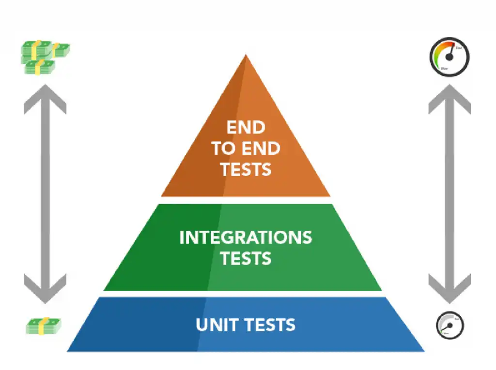

Testes Automatizados
Testes são parte do critério de "Definição de Pronto" do projeto. Funcionalidades críticas (cadastro, login, rotas protegidas) precisam de testes automatizados antes do merge.
Pirâmide de Testes
Iremos utilizar como principio de testes essa pirâmide:

Figura 1: Pirâmide de Testes
- Unitários: testam uma função/service isolado, com mocks nas dependências. Rodam em milissegundos.
- Integração: testam módulos trabalhando juntos (ex: Controller + Service + Repository com banco em memória).
- E2E (End-to-End): testam o sistema completo (HTTP real, banco real, fluxo do usuário).
Testes de Backend (NestJS)
O NestJS por padrão já garante os arquivos e padrões de testes.
Jest
O que é:
Jest é o framework de testes JavaScript/TypeScript mais usado no ecossistema Node. É o test runner padrão tanto do NestJS quanto do Next.js. Inclui assertions (expect), mocks e cobertura de código numa única ferramenta.
Como funciona no projeto:
Arquivos *.spec.ts ao lado do código testado são detectados automaticamente. Cada describe agrupa testes; cada it/test é um caso.
// users.service.spec.ts
describe("UsersService", () => {
it("deve gerar hash da senha antes de salvar", async () => {
const result = await service.create({ email: "a@a.com", password: "123" });
expect(result.passwordHash).not.toBe("123");
});
});
Comandos:
npm run test # Roda testes unitários
npm run test:watch # Modo watch
npm run test:cov # Com relatório de cobertura
npm run test:e2e # Roda testes end-to-end
@nestjs/testing
O que é:
Pacote oficial do NestJS para criar contextos de teste isolados. Fornece o Test.createTestingModule(), que monta uma versão mínima da aplicação apenas com os providers necessários, permitindo substituir dependências por mocks.
Como funciona:
const module: TestingModule = await Test.createTestingModule({
providers: [
UsersService,
{
provide: getRepositoryToken(User),
useValue: { save: jest.fn(), findOne: jest.fn() }, // mock do banco
},
],
}).compile();
const service = module.get<UsersService>(UsersService);
Por que foi escolhido:
- Permite testar services sem subir o banco real
- Isola dependências, garantindo que o teste falhe pelo motivo certo
- Integração nativa com TypeORM, JWT e outros módulos NestJS
Supertest
O que é:
Supertest é uma biblioteca para testar APIs HTTP. Ele sobe a aplicação NestJS em memória e dispara requisições reais (GET, POST, etc.) contra ela, validando status e body da resposta.
Como funciona no projeto:
// test/users.e2e-spec.ts
it("POST /api/users/register cria um usuário", () => {
return request(app.getHttpServer())
.post("/api/users/register")
.send({ name: "Teste", email: "teste@x.com", password: "senha123" })
.expect(201)
.expect((res) => {
expect(res.body.passwordHash).toBeUndefined(); // hash não deve retornar
});
});
Por que foi escolhido:
- Test E2E sem precisar subir o servidor numa porta real
- Confirma que
ValidationPipe, guards e interceptors estão ativos no fluxo - Documentação acessível e exemplos diretos no boilerplate do NestJS
Frontend - Next.js + React
Jest
Já descrito acima - o mesmo runner é usado no frontend, configurado pelo Next.js para entender JSX/TSX.
React Testing Library (RTL)
O que é: Biblioteca para testar componentes React do ponto de vista do usuário final, não da implementação interna. Em vez de buscar componentes por classe ou ID, busca por texto visível, label ou role de acessibilidade (igual um usuário faria).
Como funciona no projeto:
// register/page.test.tsx
import { render, screen } from "@testing-library/react";
import userEvent from "@testing-library/user-event";
it("exibe erro quando senha tem menos de 6 caracteres", async () => {
render(<RegisterPage />);
await userEvent.type(screen.getByLabelText(/senha/i), "123");
await userEvent.click(screen.getByRole("button", { name: /cadastrar/i }));
expect(screen.getByText(/mínimo 6 caracteres/i)).toBeInTheDocument();
});
Por que foi escolhido:
- Padrão de fato para testes de componente em React
- Filosofia "teste o que o usuário vê" reduz testes frágeis que quebram em refatorações
- Recomendado oficialmente pela equipe do React
@testing-library/user-event
O que é:
Complemento da RTL que simula interações do usuário (digitar, clicar, focar) de forma mais realista do que fireEvent. Por exemplo, userEvent.type() simula o evento keydown, keypress e keyup para cada tecla - exatamente como um teclado real.
Por que foi escolhido:
- Mais fiel ao comportamento real do navegador
- Detecta bugs que
fireEventmascara (ex: handlers que só rodam emkeyup)
Playwright (E2E recomendado)
O que é: Playwright é uma ferramenta de testes E2E criada pela Microsoft que controla um navegador real (Chromium, Firefox, WebKit). Permite testar o sistema completo: usuário abre a página, preenche o formulário, vê o resultado.
Como funcionará no projeto:
// e2e/register.spec.ts
test("usuário consegue se cadastrar", async ({ page }) => {
await page.goto("http://localhost:3000/register");
await page.fill('input[name="email"]', "novo@user.com");
await page.fill('input[name="password"]', "senha123");
await page.click('button:has-text("Cadastrar")');
await expect(page.getByText(/cadastrado com sucesso/i)).toBeVisible();
});
Por que foi escolhido:
- Suporte a múltiplos navegadores num único teste
- Auto-wait inteligente (evita
sleeparbitrário) - Geração automática de testes via
npx playwright codegen - Alternativa: Cypress (mais simples para iniciantes, mas só roda em Chromium)
Cobertura mínima esperada
Definida no documento de Padrões de Código:
| Camada | Tipo de teste obrigatório |
|---|---|
users.service |
Unitário (hash de senha, email duplicado) |
auth.service |
Unitário + E2E (login válido/inválido) |
| Rotas protegidas | E2E (acesso negado sem token) |
| Formulário front | Componente (validação, estados de erro) |
Regra: correção de bug deve vir acompanhada de teste de regressão, quando aplicável.
Referências
- Jest - Documentação oficial
- Jest - Matchers (
expect) - NestJS - Testing
- NestJS - Testing Database
- Supertest - Repositório
- React Testing Library - Documentação
- React Testing Library - Cheatsheet
- Testing Library - user-event
- Playwright - Documentação oficial
- Playwright - Test Generator (codegen)
- Roadmap.sh - QA Roadmap
- Kent C. Dodds - Testing Trophy